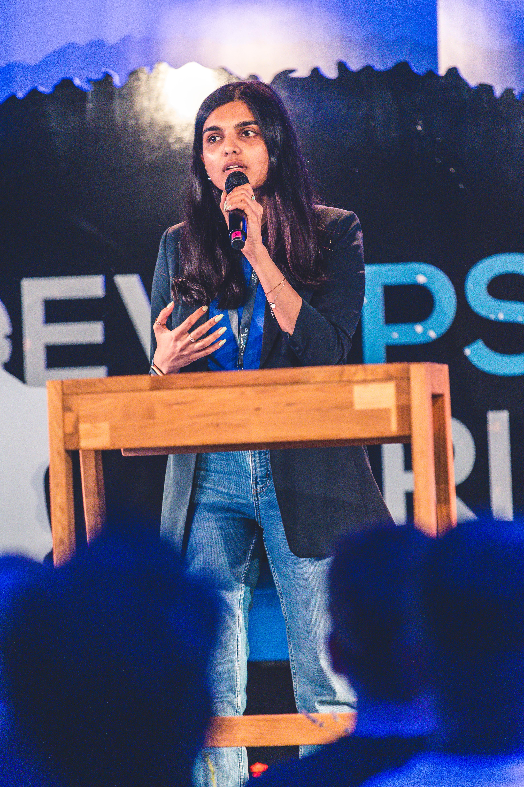

How to Design Observability Before You Buy It
DevOpsDays Zürich — Ignite Talk
Watch on YouTube →Public Speaking
Public speaking has become one of my favourite ways to learn, connect, and contribute to the technology community. I enjoy speaking about topics that bridge engineering, leadership, and systems thinking.
Key speaker topics

Recent Talks
DevOpsDays Zürich — Ignite Talk
Watch on YouTube →reher*sal conference — Hamburg
Watch the recording →I'm always excited to collaborate with Conferences, Meetups, Podcasts and Organisations looking for engaging technical talks. Have an idea for collaboration? DM me here.